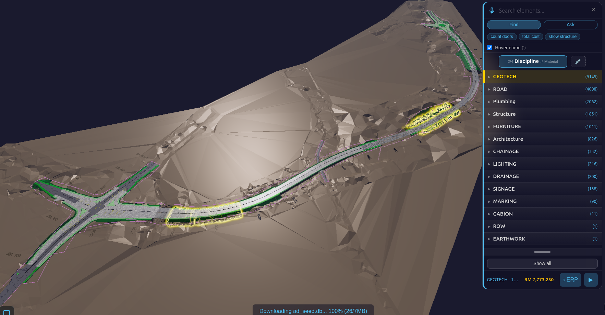
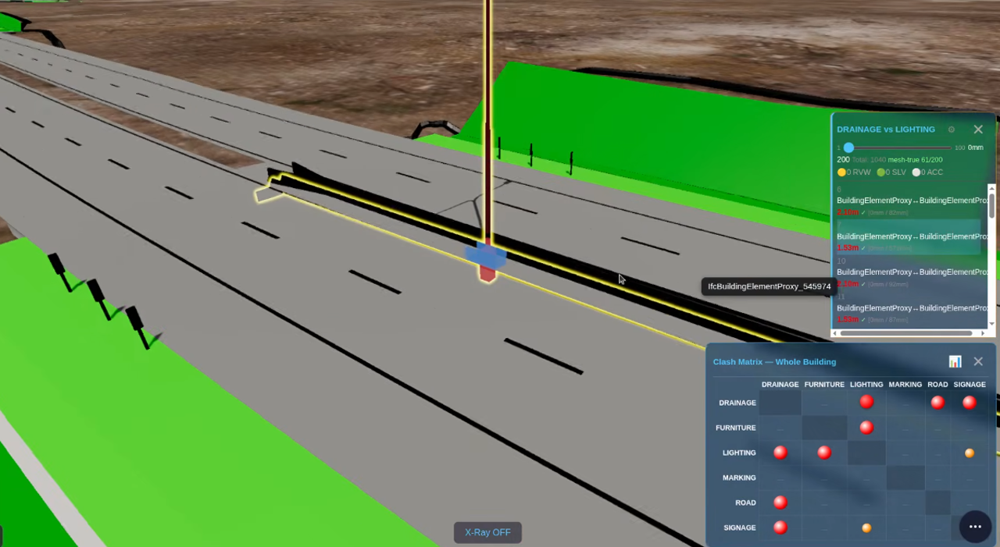
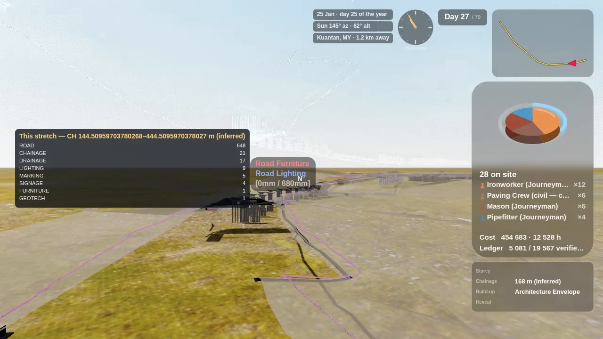
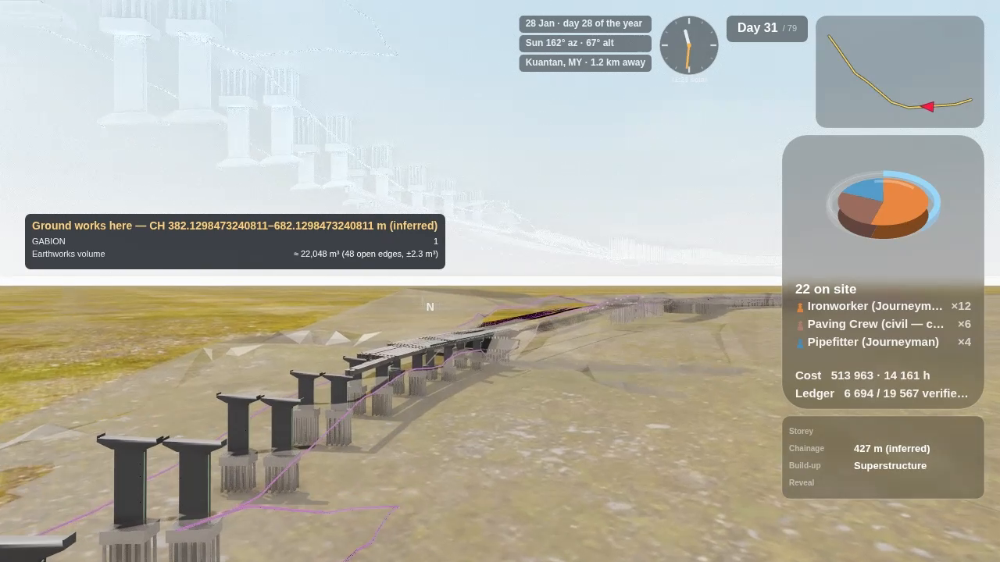
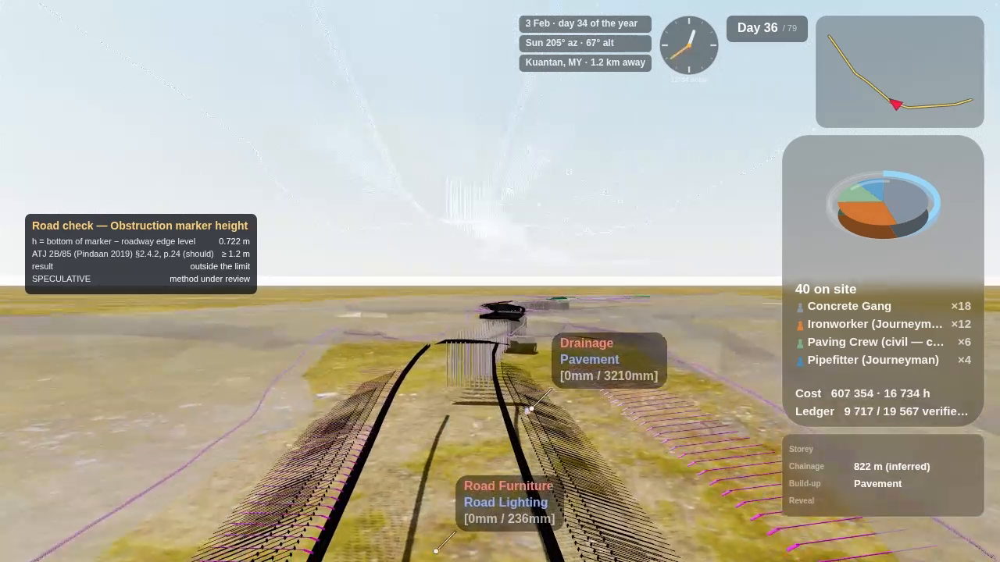
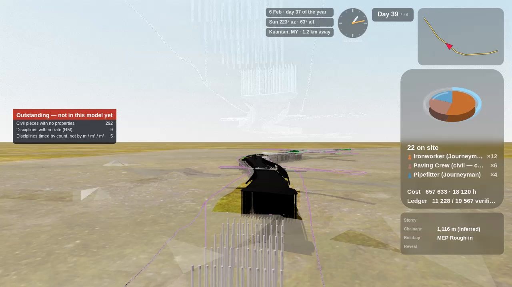
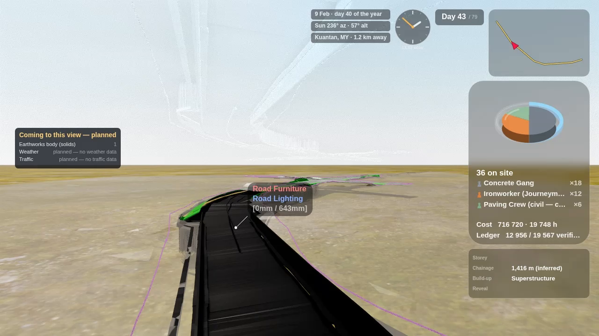

Civil Works — Step by Step (road models)¶
← Back to the BIM Viewer User Guide · User Guide · Home
This page shows what the Viewer adds only when the model is a road (civil works): the extra counts, costs, clashes, volumes, sections and the road check report you can take out of a set of road IFC files. Everything else (navigation, Find, X-Ray, the 4D Time Machine) works as in the BIM Viewer User Guide. The Alt+C film and the ERP push are left out here; they have their own pages.
🔒 Your data stays in your browser
There is no AI and no LLM in this app. The IFC files are read in your own browser and turned into one SQLite file on your own device; nothing is uploaded to us. The full wording is in the User Guide.
How this page was checked. Each number below was read back from the app's own log lines or from the model file, on the sample road set described in Before you start, on 6–7 October 2026. The tests that drive these steps are named in each step (test file names in
viewer/tests/). Where a result is an estimate or a check is not proven, this page says so in a Not yet box. The screenshots are illustrations from the same runs; they are not the evidence, the logged values are.
Words you will meet¶
| Term | What it means here |
|---|---|
| Civil model | A model that carries at least one civil discipline (ROAD, DRAINAGE, LIGHTING, SIGNAGE, MARKING, FURNITURE, EARTHWORK, GEOTECH, GABION). The Viewer switches on the civil features only then. A building never takes these paths. |
| Discipline | Which trade a piece belongs to. For a road set it comes from the file name of each IFC (for example …_DRAINAGE.ifc). |
| Chainage | Distance along the road, in metres. The Viewer infers the road's centre line from the road pieces and measures along it, so every chainage on screen is marked (inferred). |
| Mesh-true clash | Two pieces whose actual surfaces overlap — not just their bounding boxes. Box overlaps are many; real clashes are few. |
| Long section | The road's profile along its length: road level, ground level and drain levels against chainage. |
| Cross section | A thin slice square to the road at one chainage, showing what is cut there. |
| Speculative | A check whose rule or input is not proven yet. The report shows these rows, marked, instead of hiding them. |
Before you start¶
- Desktop browser, real GPU recommended. The sample road set is large: 19,892 pieces in one 421 MB file. A laptop with a separate graphics card handles it.
- The sample set. 15 IFC files, 970 MB: 11 road files from Civil 3D (IFC2X3) and 4 bridge files from Revit (IFC4X3). They load into one model.
- Your own road set works the same way as long as each file name names its discipline. A file without a discipline in its name is read as a building file.
Part A — Open the road and see what it holds¶
Step 1 · Load the road files as one model¶
Open the Viewer, choose Open and pick all the road IFC files at once (or open an already-saved road
.db). Wait until the status bar reads DONE — the civil features need the whole model streamed in.
The Viewer logs §CIVIL_MODEL civilRows=14820 → true for the sample set: that line is the switch that
turns the civil steps below on.
Step 2 · Count the pieces per discipline (Find → Discipline)¶
- Open the Navigate drawer → Find / Navigate (keyboard F).
- Tap the Storey / Discipline toggle until it reads Discipline.
- The tree lists every discipline with its piece count. Tap one to light its pieces in the model; Ctrl-tap to add more.

Sample set: GEOTECH 9,145 · ROAD 4,008 · FURNITURE 1,011 · LIGHTING 216 · DRAINAGE 200 · SIGNAGE 138 · MARKING 90 · GABION 11 · EARTHWORK 1 — plus the bridge's own disciplines (PLB 2,062 · STR 1,851 · ARC 826) and the setting-out references (CHAINAGE 332 labels, ROW 1), which are never priced.
Step 3 · Read the cost of what you selected¶
The bottom of the Find panel shows the selected pieces' cost. A civil discipline is priced per piece by discipline from the civil rate table, so it is never priced as a building element.
| Discipline | Rate | Source |
|---|---|---|
| SIGNAGE | RM 800 per sign | Selangor road-furniture tender 2023, lowest sign line (RM 800–870); includes face, post, base and labour. Regional, not national. |
| LIGHTING | RM 485 each | CIDB Malaysia 2024 price pack, LED light fixture — a building item standing in for a road lantern. |
| all others | rate not set | No free source prices them per piece yet. |
Sample set: SIGNAGE selected → 138 × RM 800 = RM 110,400 (§FIND_COST elements=138 cost=110400).
Not yet
The rates are editable starting points, not a bill of quantities. A model piece may not be one whole sign or lamp. The Find bar still shows the currency sign $ for these ringgit amounts — a display label not yet switched to RM.
Part B — Checks between the trades¶
Step 4 · Find the real clashes between ground works and drains¶
- Open the Inspect drawer → Clash Matrix (keyboard C).
- The Clash Matrix shows each pair of disciplines; a red dot is a pair with clashes. Tap a dot to list that pair's clashes.

Sample set, GEOTECH × DRAINAGE (two teams, two files): 11 mesh-true clashes out of 30,529 box
overlaps (§CLASH_NARROWPHASE broad=30529 meshTrue=11) — 6 horizontal drains against a roadside drain,
5 retaining-wall pieces against drains. Quote 11, never 30,529. Test: viewer/tests/witness_clash_geotech_drainage.js (10/10).
This is the clash an authoring tool cannot show: the two trades come from different files and different vendors.
Part C — Quantities¶
Step 5 · Earthworks volume¶
- Open the Inspect drawer → 4D / 5D (keyboard 4). The 4D/5D page opens in a new tab.
- Find the EARTHWORK row: it carries the volume line.
Sample set: ≈ 22,048 m³ (48 open edges, ±2.3 m³) (§EARTHWORKS_VOLUME verdict=APPROXIMATE
V_m3=22048.191 B_m3=2.256). The earthworks surface in the file is not fully closed (48 open edges), so the
Viewer gives the volume with its error bound, measured each time, instead of a bare number. A closed
solid gets an exact figure; a surface too open to bound gets no number at all. Test: viewer/tests/witness_ew_volume_surfaces.js (11 pass, 0 fail).
Part D — Long and cross sections¶
Step 6 · Open the section tool¶
Open the Inspect drawer → Section Cut (keyboard X). On a road model its panel shows two extra buttons after X / Y / Z: Cross and Long. They appear only on a civil model.
Step 7 · Long section — the road profile lens¶
Tap Long. A round profile lens opens over the 3D view: road level (blue), ground level (brown) and drain levels (red) against chainage, for the stretch under the lens. Drag the slider to move along the road; scroll over the lens to widen or narrow the span (100 m by default).
Step 7a · The profile sheets (Profile PDF) and a PNG¶
With Long on, two buttons sit under the slider:
- Profile PDF — opens a new tab with the whole road as sheets of 100 m (22 sheets for the sample
road), each with its chart and a table of road and ground levels every 10 m. Use the browser's
Print → Save as PDF to keep it as a file (
§PROFILE_LENS_PDF sheets=22). - PNG — saves the lens view you are looking at.
Step 8 · Cross section — a slice at one chainage¶
Tap Cross. A 2 m slice is cut square to the road at the slider's chainage; drag the slider to slide it along the road. Each position logs what is cut, by discipline. Sample set:
| Chainage | Pieces cut | Mostly |
|---|---|---|
| 900 m | 131 | ROAD 62, GEOTECH 53, DRAINAGE 10 |
| 1,000 m | 157 | GEOTECH 69, ROAD 67, DRAINAGE 14 |
| 1,100 m | 38 | STR 18 (the bridge), ROAD 6 |
(§CROSS_SECTION … normal·tangent=1.000000 slabM=2 elementsCut=…). Test: viewer/tests/witness_civil_sections.js — the cut set
matches an independent recompute from the raw geometry at every slider position checked (0 differences).
Not yet
Chainage is inferred from the road pieces (the files carry no alignment), so it is good for finding your way, not for setting out. Known gaps in the lens: the PNG is the round lens as drawn (ring and clipped edges); the legend lists ground even where no ground was found; a few sudden road-level dips are under investigation (possibly a lower culvert or drain read as the road top); drains show as short dashes because a drain level exists only where a drain crosses the road.
Part E — The road check report¶
Step 9 · Open Model Check¶
On the 4D/5D page of a road model, the button that reads MEP on a building reads ✅ Model Check. Tap it: the road check report opens in a new tab.
It lists every check row with its result and a tag: valid (rule and inputs proven) or
speculative (shown, not hidden). Sample set: 302 rows — 20 valid, 282 speculative
(§MC_REPORT rows=302 valid=20 speculative=282). The one road check proven so far is stud spacing:
1.00 m in 20 groups. The report also carries a Quantities card with the earthworks volume from Step 5.
Not yet
Most road checks are speculative: the sign-height rule reads below ground (−6.02 m) and lateral clearance reads 0.00 m on all 138 signs — the inputs in the files do not support those rules yet. The report says so instead of passing them.
What the film shows of the same data (Alt+C)¶
You do not need the film to get any report above. If you make one (see the BIM Viewer User Guide → Cinema Film-Maker), a road model adds five info panels along the drive. They read the same values as Parts A–E:





Not yet
The chainage range on panels 1 and 2 prints raw decimals (e.g. CH 144.50959703780268–444.50959703780268 m); it should round to whole metres.
Troubleshooting¶
| You see | Why | Do |
|---|---|---|
| No Cross / Long buttons, no Model Check | The model has no civil discipline (file names carry none), or it is still streaming. | Wait for DONE; check Find → Discipline shows ROAD, DRAINAGE, … |
| Cost shows rate not set | That discipline has no per-piece rate yet. | Edit the rate in the 4D/5D rates panel. |
| Earthworks line shows no number | The surface is too open to bound the volume. | Ask for a closed earthworks solid in the export. |